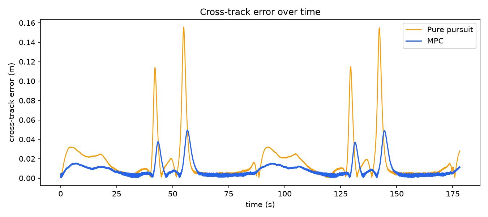
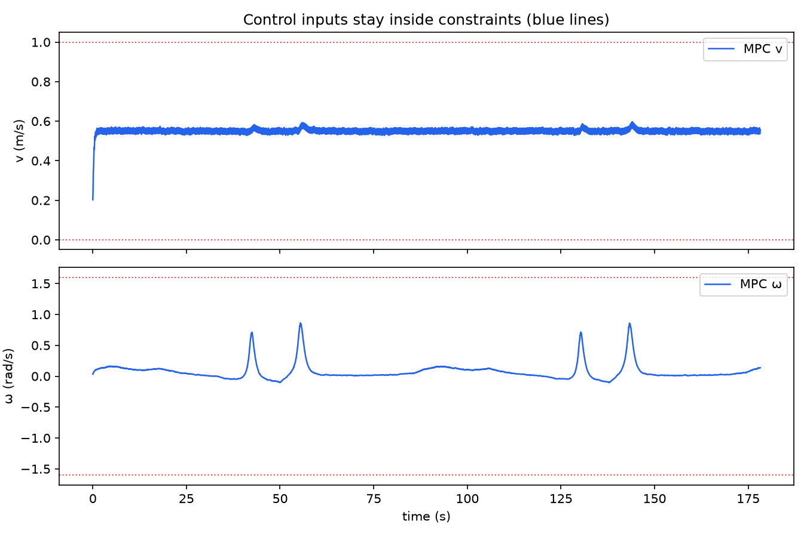
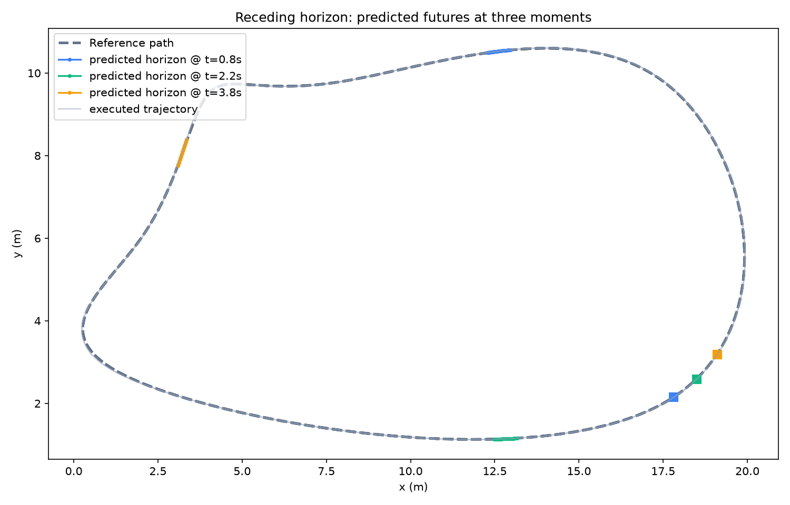

9.1为什么 P 控制不够，MPC 值得学
第 3 章的航点跟踪器本质是比例控制：ω = k·e_θ。它有两个先天缺陷：
- 短视：只看当前误差。急弯前不知道该提前减速、提前转向，冲过弯再补救——误差尖峰就是这么来的。
- 无视约束：算出的 ω 可能超过底盘极限。硬截断（clip）后控制方向错误，震荡。
MPC 的解法哲学：把"未来"和"约束"写进一个优化问题，每个控制周期解一次。
9.2第一步：把机器人写成方程
沿用第 3 章的运动学：$\dot{x}=v\cos\theta,\ \dot{y}=v\sin\theta,\ \dot\theta=\omega$。 但直接拿 $(x,y,\theta)$ 做优化变量有两个麻烦：绝对坐标数值大、参考线附近的"误差"才是我们真正关心的。 于是做误差状态线性化——定义跟踪误差：
在参考点 $(x^r, y^r, \theta^r, v^r)$ 处对运动学做一阶泰勒展开（把 $\cos/\sin$ 在参考角处展开）， 得到每个预测步 $k$ 的线性时变系统：
$\mathbf{c}_k$ 是补偿项：参考线本身由样条生成，不严格满足"以 $v^r$ 匀速走一步恰好到达下一个参考点"， 这一点"动力学不合规"用 $\mathbf{c}_k = f(\text{参考点}_k) - \text{参考点}_{k+1}$ 显式补进预测里。 忽略它的后果：直线上跟踪很好，弯道上出现系统性偏差——很多开源实现的 bug 源头。
我们每 50 ms 都在新的真实状态处重新线性化——线性化的原点永远"跟得上"机器人， 所以泰勒展开的一阶近似始终在有效范围内。这是 MPC 能处理非线性系统的关键机制： 不追求一个大而全的非线性优化，而是把非线性拆成无限多个"刚刚线性化的小问题"。
9.3第二步：写出优化问题（QP）
目标：时域内误差小、控制省、终点稳；约束：速度/角速度限幅 + 角加速度限幅（保护电机）。
参数解读：$Q$ 惩罚误差（横向 $e_y$ 通常给最大的权重——"贴线"最重要）； $R$ 惩罚控制量（防抖，太大则懒动）；$Q_f$ 终端权重（理论上保证稳定性， 实践中取 $8Q$ 左右能让预测"看得更远"）。
把预测方程沿时域堆叠（递推代入），决策变量只剩 $\Delta\mathbf{u}_{0..N-1}$（$2N$ 个标量）， 整个问题变成标准的凸二次规划（QP）：$N=25$ 时只有 50 个变量、150 条约束。 这正是 OSQP 的舒适区（它处理的工业问题动辄几万变量）。
def solve(self, state, ref, w_prev):
"""ref: (N+1, 5) = [x, y, θ, v, ω] 未来 N+1 步参考"""
e0 = state - ref[0][:3] # 当前误差（角度已 wrap）
As, Bs, cs = self._dynamics(ref) # 每步的线性化 A/B/c
# ---- 凝聚预测：E_k = Φ_k·e0 + Σ Su·Δu + C ----
# 逐步累积：E(3N,), Su(3N × 2N) —— 状态全部消掉
...
# ---- QP：min ½ zᵀH z + qᵀz，z = Δu_0..Δu_{N-1} ----
H = Su.T @ Qbar @ Su + block_diag(R) # 2N × 2N
q = Su.T @ Qbar @ E
# ---- 约束：v/ω 限幅 + 角加速度限幅 ----
for k in range(N):
A_rows.append(δv_k 行); l/u = [V_MIN, V_MAX] - v_ref[k]
A_rows.append(δω_k 行); l/u = [±W_MAX] - ω_ref[k]
for k in range(N): # |ω_k − ω_{k−1}| ≤ DW·dt
A_rows.append(ω_k − ω_{k−1} 行)
# ---- OSQP ----
prob = osqp.OSQP()
prob.setup(P=sparse(H), q=q, A=sparse(A_rows),
l=l_rows, u=u_rows, verbose=False, warm_starting=True)
res = prob.solve()
return v_ref[0] + res.x[0], ω_ref[0] + res.x[1] # 只取第一个！OSQP 专为 MPC 场景设计：热启动（上一周期的解是本周期极好的初值， 通常 5~10 次迭代就收敛）、ADMM 求解器对稠密/稀疏通吃、API 只要 P/q/A/l/u 五件套。 若你不想装依赖，第 2 章的"无约束 GN"也能解（代价：约束只能靠 clip 硬顶， 第 9.6 节网页版演示就是这么做的轻量近似）。
9.4成绩单：MPC vs 纯追踪
同一参考路径（含两处急弯）、同一机器人、同一噪声种子，跑完整两圈（184 s / 100 m）：



9.5实把玩：调参驾驶舱
下面的仿真把每个关键参数做成了滑杆。实验指南：
- N（预测步数）：从 25 调到 8 —— 机器人变"近视"，急弯误差变大；调到 40 —— 更稳但计算变重。 这就是"看得远"的代价曲线。
- Q（横向权重）：调到 0.5 —— 机器人变得"懒散"，切弯抄近路；调到 10 —— 神经质般贴线，ω 抖动加剧。
- R（控制权重）：调到 1.0 —— 控制变得慵懒迟钝；调到 0.05 —— 反应极快但可能小幅震荡。
- 限速：调到 1.0 m/s —— 注意它自动在急弯前减速（参考轨迹按曲率调度）， 这就是约束感知和"硬踩油门"的区别。
9.6两种实现的对照（网页演示 vs 课程代码）
| 课程代码 run_mpc.py | 网页演示 sim-mpc.js | |
|---|---|---|
| QP 求解 | OSQP（ADMM，带全部约束） | 高斯消元解无约束 QP + 输入限幅 |
| 约束处理 | 硬约束，优雅贴边 | 饱和截断（约束激活时有小误差） |
| 角加速度约束 | 有 | 有（显式 clamp） |
| 用途 | 精确复现 / 论文级结果 | 60 fps 实时交互演示 |
两者在约束未激活时表现几乎一致——这也是检验你 QP 构造正确性的方法： 先写无约束版本对拍，再加约束。
- 能写出误差状态模型 e_{k+1} = A e + B Δu + c，并解释 c 的来源
- 能默写 QP 的代价与三类约束
- 玩过调参驾驶舱的全部 4 个滑杆，能预测每个参数的方向性影响
- 知道 OSQP 的热启动为什么让 MPC 实时可行
练习 1 · 验证 c_k 的必要性
_dynamics 的 cvec 置零重跑。
圆角弯道处 RMSE 从 0.012 m 涨到 ~0.02 m，且曲率越大偏差越大——
补偿项的作用被曲率放大。参考线如果改用"严格按运动学生成的轨迹"（v、ω、θ 完全一致），
c 自然为零；样条参考线则必须补。